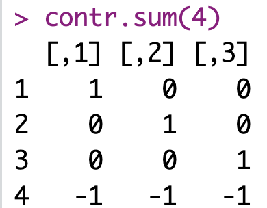
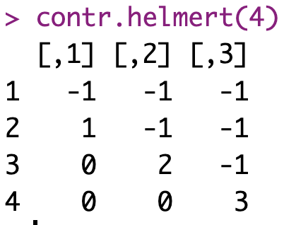

Intercept is the reference group mean. Unstandardized weights indicate difference between a group’s mean and reference group mean. In this example, group 1 is the reference group.
Default in R. Do NOT use for ANOVA.
Sum Contrast / Effect Contrast

Intercept is the grand mean. Unstandardized weights indicate difference between a group’s mean and last group’s mean (Group 4 here).
Do NOT use for ANOVA.
Helmert Contrast

Intercept is the grand mean. First contrast, unstandardized weight indicate difference between Group 2 and Group 1 means. Second contrast, unstandardized weight indicate difference between Group 3 mean and the average of the Group 1 and Group 2 means. Third contrast, unstandardized weight indicate difference between Group 4 mean and the average of the Group 1, Group 2, and Group 3 means. And so on.
USE for ANOVA.
1.2 Treatement/Dummy Coding
Use the Treatment contrast ONLY when you are interested in the contrast itself. DO NOT use if you are interested in typical ANOVA results (main effect, main effect, interaction, etc.).
This approach is the default appraoch in R unless you specify otherwise. In most cases, this is NOT what you want in Psychology analyses.
Comparisons are to one specific level of the Independent Variables that we call the reference group.
The computer will always use contrasts when there are categorical variables. So you should set the contrast you want. Here we set the contrast as Treatment (or Dummy) Coding. In most cases you will not want Treatment Coding. You will want Sum Coding we cover that in the next section. But we start with Treament Coding because it is easier to understand.
options(contrasts =c("contr.treatment", "contr.poly"))lm_viagra <-lm(libido ~ dose, data = viagra)
tidy(lm_viagra)
term
estimate
std.error
statistic
p.value
(Intercept)
2.2
0.6271629
3.507860
0.0043189
doselow_dose
1.0
0.8869423
1.127469
0.2815839
dosehigh_dose
2.8
0.8869423
3.156913
0.0082681
What is going on here? The single dose column has disappeared. Instead we get \(b\)-weights for doselow_dose and dosehigh_dose. How do you interpret that information?
1.2.4 Treatment Contrasts Explained
In the above analysis, we take a categorical variable and indicate it’s factor with the code below. With this code we are telling the computer it as a factor (i.e., a categorical variable) and indicating, with ref = “placebo”, that all the group means should be compared to the placebo group mean - if a treatment contrast is used.
In conjuction with the above “as_factor” commmand, we specify the rule for turning the factor (i.e., categorical variables) into “contrast columns” that will be used for the actual analysis. We do that with the line below that indicates we want to use treatment coding also known as dummy coding. It is CRITICAL that you set the contrast used for your regression if you have categorical variables.
A contrast will ALWAYS be used if you have categorical variables - you want to make sure it’s the one you want. Treatment Contrast is probably not the one you want in most cases - but we start with this one because it is common and easy to understand.
The combination of the two code blocks above (creating a factor, setting the contrast) results in the computer creating a data set like the one below when you conduct the regression.
The computer actually ran the code below. Notice how the predictors are the contrast columns dose_low_dose and dose_high_dose. That’s how the computer handles categorical variables in a regression.
The\(p\)-values for the \(b\)-weights assess the statistical difference between each group and the reference group (i.e., placebo). So Treatment (Dummy) Contrasts are a great way to compare each group mean to the reference group.
Examine the weights in the above table and see how they can be used to recreate the group means.
1.2.5 ANOVA Summary Information
With a one-way ANOVA, it’s easy to exact ANOVA information from the Regression output.
glance(lm_viagra)
r.squared
adj.r.squared
sigma
statistic
p.value
df
logLik
AIC
BIC
deviance
df.residual
nobs
0.4603659
0.3704268
1.402379
5.118644
0.0246943
2
-24.68305
57.3661
60.1983
23.6
12
15
From this output you can see that for this one-way ANOVA, \(F\)(2, 12) = 5.119, \(p\) = .025. In a one-way ANOVA the effect size is \(\eta^2 = \eta_{partial}^2=R^2= .46\). Note that in a one-way ANOVA, \(\eta^2\) = \(\eta_{partial}^2\) but this is not the case when you move to N-way ANOVA.
summary(lm_viagra)
Call:
lm(formula = libido ~ dose_low_dose + dose_high_dose, data = viagra_dummy_coded)
Residuals:
Min 1Q Median 3Q Max
-2.0 -1.2 -0.2 0.9 2.0
Coefficients:
Estimate Std. Error t value Pr(>|t|)
(Intercept) 2.2000 0.6272 3.508 0.00432 **
dose_low_dose 1.0000 0.8869 1.127 0.28158
dose_high_dose 2.8000 0.8869 3.157 0.00827 **
---
Signif. codes: 0 '***' 0.001 '**' 0.01 '*' 0.05 '.' 0.1 ' ' 1
Residual standard error: 1.402 on 12 degrees of freedom
Multiple R-squared: 0.4604, Adjusted R-squared: 0.3704
F-statistic: 5.119 on 2 and 12 DF, p-value: 0.02469
From this output you can (AGAIN) see that for this one-way ANOVA, \(F\)(2, 12) = 5.119, \(p\) = .025. In a one-way ANOVA the effect size is \(\eta^2 = \eta_{partial}^2=R^2= .46\).
Note: A good exam question would be to present a table like this an then ask you the mean for each group. With treatment/dummy coding the regression weight indicate for the reference group the mean of that group. For the other groups, the regression weights indicate the difference from the reference group.
1.3 Sum Contrast / Effect Contrast
Use the Sum contrast ONLY when you are interested in the contrast itself. DO NOT use if you are interested in typical ANOVA results (main effect, main effect, interaction, etc.).
With sum coding, the contrasts create \(b\)-weight represent comparisons of each group mean to the to the grand mean. What is the grand mean? It’s just the mean of the dependent variable column across all conditions.
From this output you can see that for this one-way ANOVA, F(2,12) = 5.118644, p = 0.0246943.
summary(lm_viagra_sum)
Call:
lm(formula = libido ~ dose1 + dose2, data = viagra_sum_coded)
Residuals:
Min 1Q Median 3Q Max
-2.0 -1.2 -0.2 0.9 2.0
Coefficients:
Estimate Std. Error t value Pr(>|t|)
(Intercept) 3.4667 0.3621 9.574 5.72e-07 ***
dose1 -1.2667 0.5121 -2.474 0.0293 *
dose2 -0.2667 0.5121 -0.521 0.6120
---
Signif. codes: 0 '***' 0.001 '**' 0.01 '*' 0.05 '.' 0.1 ' ' 1
Residual standard error: 1.402 on 12 degrees of freedom
Multiple R-squared: 0.4604, Adjusted R-squared: 0.3704
F-statistic: 5.119 on 2 and 12 DF, p-value: 0.02469
From this output you can (again) see that for this one-way ANOVA, F(2,12) = 5.118644, p = 0.0246943.
Note: A good exam question would be to present a table like this an then ask you the mean for each group. With treatment/dummy coding the regression weight indicate for the reference group the mean of that group. For the other groups, the regression weights indicate the difference from the reference group.
1.4 Helmert Contrast
Use the Helmert Contrast if you are interested in typical ANOVA results (main effect, main effect, interaction, etc.).